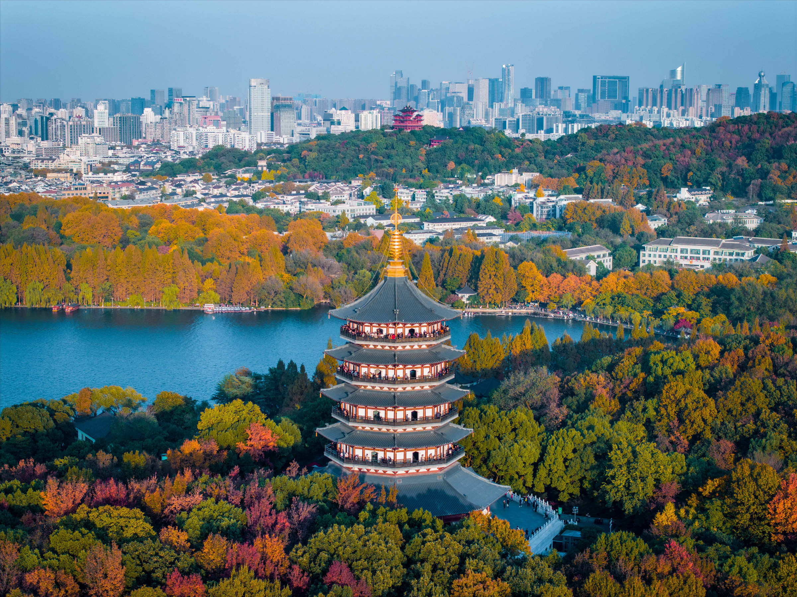

West Lake
The lake is not a single view but a succession of them: causeways, pagodas, islands, and the hills that hold the water in a shallow bowl. Go in the early morning, or at dusk, when the boats are fewer and the light is long.

Hangzhou is a city that has been written about for a thousand years, and West Lake is the reason. A pagoda on the wooded shore, boats moving slowly on the water, willows along the causeways, and the tea hills of Longjing just beyond the city — this is the landscape that Chinese poets and painters kept returning to. It is also a living city: a place of silk and tea, of university campuses and quiet temples, and of evenings when the lake holds the last of the light.
Arrive here from the east and you may want to stay, rather than merely pass through. We are preparing the Hangzhou Artificial Intelligence Camp; dates and a syllabus will be published when they are ready.
Spring and autumn are Hangzhou’s finest seasons: mist over the lake, tea being picked in the hills, and days that are comfortable to walk. Early summer can be wet; high summer is hot and humid.
| City | 1Jan | 2Feb | 3Mar | 4Apr | 5May | 6Jun | 7Jul | 8Aug | 9Sep | 10Oct | 11Nov | 12Dec |
|---|---|---|---|---|---|---|---|---|---|---|---|---|
| Hangzhou |
Hangzhou Xiaoshan International Airport (HGH) lies east of the city, with domestic and a growing number of international flights. The airport express and taxis make the journey into the centre straightforward.
Hangzhou East is the main high-speed station, about an hour from Shanghai Hongqiao, and well connected to Beijing, Nanjing and the rest of the network. For many travellers, the train is the easiest arrival of all.
The metro now reaches the lake, the railway stations and the airport line. Taxis and Didi are reliable. Around West Lake and in the tea hills, walking and a bicycle are still the best way to move, and a boat on the water remains the most natural introduction to the city.
March to May, and again from September to November, are the months to choose: peach blossom and new tea in spring, clear, dry days in autumn, and the lake at its most photogenic. The plum rains of June can last for days. July and August are hot, and the shores of the lake are busier then.
The lake is not a single view but a succession of them: causeways, pagodas, islands, and the hills that hold the water in a shallow bowl. Go in the early morning, or at dusk, when the boats are fewer and the light is long.
Just south-west of the lake, the terraces of Longjing produce one of China’s most famous green teas. The villages among the bushes are close enough for an afternoon: a walk, a cup of tea, and a sense of the landscape that has always belonged to Hangzhou.
Lingyin Temple sits in the wooded hills west of the lake, with stone carvings in the cliffs nearby. In the city itself, fragments of the old streets, the silk tradition, and a quieter temple life still sit behind the newer avenues.
Hangzhou is a port as well as a destination. If you would like to begin a journey here — or to hear when the Hangzhou Artificial Intelligence Camp is ready — we would be glad to talk.